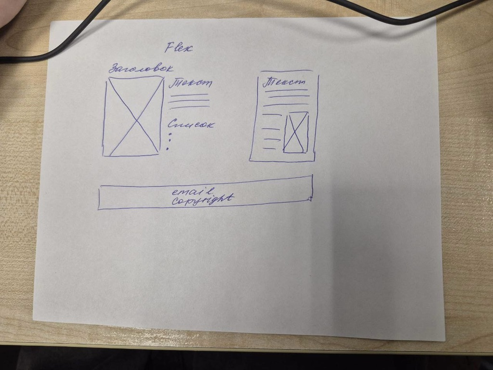

Предисловие: Наконец появилась возможность добраться до интернета, сейчас мы находимся в Панамском канале и здесь есть wifi. Я на судне уже больше месяца и пока я здесь, я писал все интересное что здесь происходит и вот наконец есть возможность этим поделиться. Фотографий пока не будет, их я выложу или позже, или уже когда вернусь домой. Итак, понеслась:
На первый взгляд судно неплохое, в относительно хорошем состоянии, хотя и 92 года постройки. Экипаж 19 человек - 11 русских и 8 филиппинцев, включая повара. Говорят, периодически становится тоскливо от егошних кулинарных изысков. Филиппинцы здесь рядовой состав, за ними постоянно нужно следить чтобы не натворили чего, среди них только один матрос по-настоящему ответственный и с руками из нужного места, все понимает с полуслова. Остальные - типичные Равшаны да Джамшуты. А еще один из них - гомосек О___о, в добавок к этому он опасный человек, в том плане, что легко впадает в состояние ступора и отключает мозг:

был случай как он закрыл одного матроса в трюме, тот орал и тарабанил внутри, это заметил боцман, начал орать на этого персонажа, который, в свою очередь испуганно выпучив глаза, трясущимися руками продолжал закручивать барашки. В итоге боцман его отодвинул и выпустил матроса из трюма. Общение на английском языке, но из-за акцента не всегда с первого раз понятно что филиппинцы говорят, особенно по рации. Напимер, говорит он тебе: